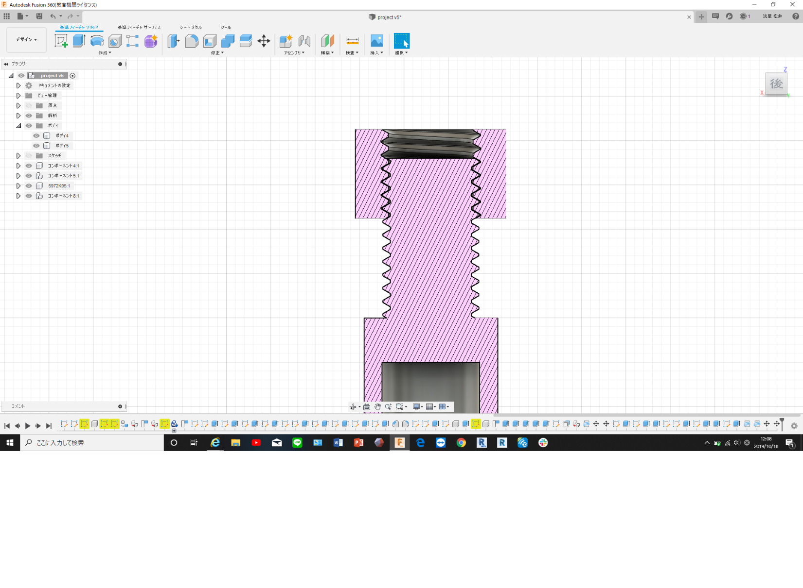

・今回はda vinci miniの設定を変えてで製作した試作2号である。
前回の構造と失敗をもとに、製作した。しかし前回同様、真円が楕円になってしまった。
次は真円が必要なパーツは違うプリンターを使用し、様子を見てみようと思う。
次に、今回モデリング中に苦戦したことを記述する。
本体構造にねじを用いようと思い、ねじをモデリングした。ねじ自体は簡単に作れる。
その時にねじがスムーズに入るように面取りをしてからねじを作ろうと考えた。ところが面を取った部位にねじをつくり、当てはめてみるとねじ山が全く合わず、面取りの長さを変えてもなかなか合わなかったため、結局面取りはせずにねじをつくった。その際ねじ山が合っている写真が下の写真である。この問題は操作性に関わるので克服して製作していこうと思う。
